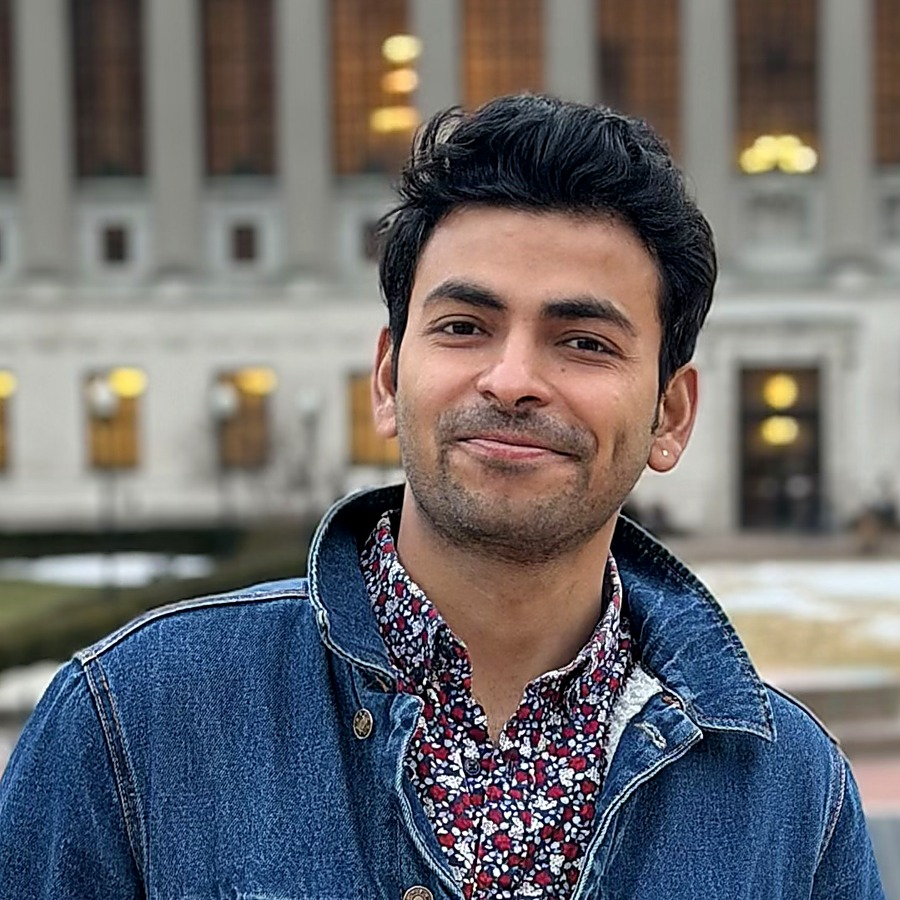

Anupam Raj
ar5099 [at] tc.columbia.edu
Ph.D. Student, Science Education
Teachers College, Columbia University
About
I am a Ph.D. student in Science Education at Teachers College, Columbia University, where my dissertation examines the impact of AI on learning, teaching, and the labor market.
My work sits at the intersection of education policy, equity, and emerging technology. I use quantitative and qualitative methods to understand how AI is reshaping classrooms and career pathways. I am also drawn to the deeper philosophical and conceptual questions AI raises for education.
I like to think deeply about fundamental questions. What does it mean to learn? How can we learn effectively and humanly? And what does it mean to teach in a way that serves our authentic understanding of learning? I approach these research questions with the hope of developing conceptual frameworks that are empirically rigorous and theoretically meaningful, particularly in support of historically marginalized communities.
Before Columbia, I trained and taught as a physics educator, earning degrees from the University of Massachusetts Dartmouth, the University of Maine, and the National Institute of Technology, Srinagar. I have taught high school physics in Boston and Portland, Maine, and served as a teaching assistant across physics, mathematics, and political science courses at various institutions.
Research Interests
Education
- Ph.D., Science Education (in progress) — Teachers College, Columbia University, 2025–Present
Dissertation: Understanding the Impact of AI on Learning, Teaching, and the Labor Market - M.S., STEM Education — University of Massachusetts Dartmouth, 2023–2025
- M.S., Teaching — University of Maine, 2019–2022
- M.S., Physics — National Institute of Technology, Srinagar, 2016–2018
- B.S., Physics (Hons.) — Amity University, Noida, 2013–2016
Current Projects
Epistemic Injustice in Teacher Perceptions of AI Research
The Student's Dilemma: Using Game Theory and Mechanism Design to Realign AI Use in Education
Publications
- Raj, A., Miglani, A., Xu, T., Bosley-Smith, C., & McIntyre, J. (2026). Opportunity to grow, incentive to pursue: Future of U.S. vocational-technical jobs in the age of AI. White Paper. Pioneer Institute for Public Policy Research. (in press)
- Raj, A., Miglani, A., Chawla, D., Bosley-Smith, C., & McIntyre, J. (2026). Fewer students, greater demand: What Massachusetts can learn from its vocational technical schools. White Paper. Pioneer Institute for Public Policy Research.
- Raj, A. (2026). Reimagining learning as a 3-dimensional vector: Integrating behaviorism, cognitivism, and social constructivism. In Proceedings of ISLS 2026. (in press)
- Raj, A., & Wittmann, M. C. (2026). Teacher perception and practices of the Next Generation Science Standards (NGSS): Insights from a New England study. In Proceedings of ISLS 2026. (in press)
- Raj, A., Bains, S., & Kaur, A. (2026). Purpose and paradox in India's National Education Policy 2020: The catch-22s of learning reform. In Proceedings of ISLS 2026. (in press)
- Raj, A., Stroup, W., & Kayumova, S. (2025). Stories, printing press, internet, and now ChatGPT: Examined via the new SMART framework. In Proceedings of CSCL 2025 (pp. 445–449).
- Raj, A., Kushimo, K., & McIntyre, J. C. (2025). Educational attainment, diversity, and trust dynamics in Nigeria. In Proceedings of ISLS 2025 (pp. 1115–1122).
- Raj, A., & Kayumova, S. (2025). Zone of playful development: Play for transformational equity in multilingual STEM classrooms. In Proceedings of ISLS 2025 (pp. 2105–2109).
- Raj, A., Wittmann, M., & Kayumova, S. (2025). Resilient and transformative journey of teachers through the pandemic and beyond. In Proceedings of ISLS 2025 (pp. 2115–2119).
- Raj, A., Wittmann, M., & Kayumova, S. (2025). Rethinking differentiated instruction: Lessons from the pandemic for today's diverse classrooms. In Proceedings of ISLS 2025 (pp. 3200–3203).
- Raj, A., Ashique, S. M. R., & Bosley-Smith, C. (2024). Lingering effects of the pandemic on student performance in Massachusetts, USA. The International Journal of Engineering and Science, 13(6), 38–41.
- Raj, A., Wittmann, M., & Kayumova, S. (2024). Being fair & equitable: A qualitative study of science teachers' shifts in priorities and expectations during COVID-19. In Proceedings of ICLS 2024 (pp. 2283–2284).
- Kayumova, S., Raj, A., & Harper, A. (2024). I see myself as a Science Person: Insights into science identity development among emergent multilingual youth. In Proceedings of ICLS 2024 (pp. 2507–2508).
- Raj, A. (2022). Investigating the Teaching and Assessment Experiences of Maine Secondary Science Teachers During the COVID-19 Lockdown. The University of Maine.
Conference Presentations
- ISLS Annual Meeting 2026 — Irvine, CA. Presented three papers, in press.
- ISLS Annual Meeting 2025 (incl. ICLS & CSCL) — Helsinki, Finland. Presented five papers.
- ICLS 2024 — Buffalo, NY. Presented two papers.
- NARST 2025 Annual International Conference — National Harbor, MD. "Supporting Emergent Bilingual Students' Understanding of Energy Through Equitable Teaching Practices," full paper presentation.
Teaching
- Teaching Assistant, Scope and Methods, GSAS, Columbia University Summer 2026
- Teaching Assistant, Rationalizing the World: American Social Science, GSAS, Columbia University Spring 2026
- Teaching Assistant, Introduction to Quantitative Analysis I for Political Science, GSAS, Columbia University Fall 2025
- Turnaround Physics Teaching, Excel High School, Boston Fall 2022–Summer 2023. Full-time 9th grade physics teacher and Instructional Team Leader for the Science Department.
- Teaching Assistant, Physics Dept., University of Maine Fall 2021. Lab and Recitation Instructor for Intro to Physics.
- Teaching Assistant, Math Dept., University of Maine 2019–2020. Pre-calculus and Calculus.
Achievements & Fellowships
- Teachers College Zankel Fellowship 2026–2027
- Global Policy Fellow for Education in Emergencies — Teachers College, 2025–2026
- Science Education Endowment Scholarship — Teachers College, 2025–2026
- Emerging Leader Financial Award — Teachers College, 2025–2028
- Outstanding Graduate Student Award — RiSE Department, University of Maine, 2022
- Selected for Teach for India 2019–2021 cohort
Research Experience
- Research Assistant, Edmund W. Gordon Institute for Advanced Study, Teachers College, Columbia University Summer 2026. Research support on a Spencer Foundation-funded study of Black and Latino youth's experience and perception of AI in New York City.
- Research Assistant, AEQUITAS Lab, Teachers College, Columbia University Fall 2025–Present. Projects on AI, ethics, and education, with a focus on teacher perceptions and algorithmic bias.
- Research Consultant, Pioneer Institute, Boston 2025–Present. Co-authored working papers on the success of vocational-technical schools in Massachusetts and the future of vocational-technical jobs in the age of AI.
- Research Collaborator, Harvard Graduate School of Education Fall 2024–Present. Ongoing research projects involving DESE, PISA, and Afrobarometer datasets.
- Research Assistant, RiSE Center (Research in STEM Education), University of Maine Fall 2021. Literature review, transcribing, and coding for the INSPIRES project.
- Research Intern, Physics Education Research Lab, Homi Bhabha Centre for Science Education, TIFR, India Jan–Feb 2019. Developed low-cost physics lab demonstrations and activity sheets from everyday materials for underprivileged schools.
Personal Background
When I am not at the library, I like to play sports, dance West Coast Swing, and practice Vipassana meditation.
I grew up in Bihar and studied at St. Dominic Savio's in Patna. I then moved to Delhi to finish high school and complete my undergraduate degree. I went to Kashmir for my M.S., and in 2019 moved to the U.S., where I have had the pleasure of living in Maine, Boston, and now Manhattan, New York.
I aspire to be a professor, writer, and advisor to educational institutions, using what I've been given to create opportunities for others, especially those who have historically had fewer.